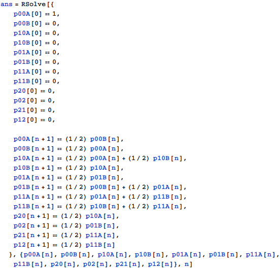

東京大学 2013年 理科 第3問
問題
A, Bの2人がいる。投げたとき表裏の出る確率がそれぞれのコインが1枚あり、最初はAがそのコインを持っている。次の操作を繰り返す。
(i) Aがコインを持っているときは、コインを投げ、表が出ればAに1点を与え、コインはAがそのまま持つ。裏が出れば、両者に点を与えず、AはコインをBに渡す。
(ii) Bがコインを持っているときは、コインを投げ、表が出ればBに1点を与え、コインはBがそのまま持つ。裏が出れば、両者に点を与えず、BはコインをAに渡す。
そしてA, Bのいずれかが2点を獲得した時点で、2点を獲得した方の勝利とする。ただとえば、コインが表、裏、表、表と出た場合、この時点でAは1点、Bは2点を獲得しているのでBの勝利とのなる。
(1) A、Bあわせてちょうどn回コインを投げ終えたときにAの勝利となる確率p(n)を求めよ。
(2) を求めよ。
解答
(1)
起きうる状態は
・p00A: Aが0点、Bが0点、Aがコインを持っている
・p00B: Aが0点、Bが0点、Bがコインを持っている
・p10A: Aが1点、Bが0点、Aがコインを持っている
・p10B: Aが1点、Bが0点、Bがコインを持っている
・p01A: Aが0点、Bが1点、Aがコインを持っている
・p01B: Aが0点、Bが1点、Bがコインを持っている
・p11A: Aが1点、Bが1点、Aがコインを持っている
・p11B: Aが1点、Bが1点、Bがコインを持っている
・p20: Aが2点、Bが0点
・p02: Aが0点、Bが2点
・p21: Aが2点、Bが1点
・p12: Aが1点、Bが2点
の12通り。これらの状態の、初期状態と状態間の遷移確率を漸化式で表してRSolveで解く。

求める確率p(n)はp20 + p21だから、
(2)
補足・感想
(1)は遷移確率行列にしたほうがプログラムを書く時に間違いが少ないかもしれない。
Mathematica 8ではMatrixPowerでn乗を計算してくれなかったが、最新のMathematicaなら大丈夫。
Wolfram Cloudで上の計算を実行すると以下の計算結果が返ってくるので、以下はそれを利用して続ける。
求めるp(n)は
となって、RSolveを使ったときと同じ解を得る。